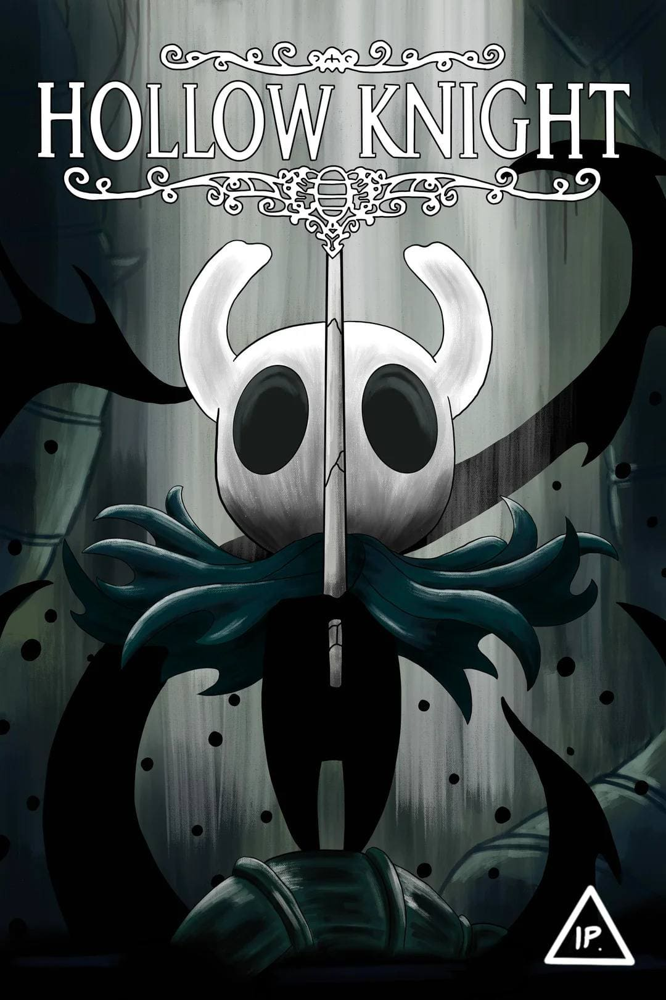

Meine Interessen drehen sich vor allem um spannende Welten und fesselnde Geschichten - sei es in Videospielen, Filmen oder Anime und Manga.
Jedes dieser Medien begeistert mich auf seine ganz eigene Weise:
Videospiele faszinieren mich durch ihre interaktive Immersion, Filme ziehen mich mit zeitlosen Erzählungen in ihren Bann, und Anime sowie Manga bestechen durch ihre kreative Vielfalt und emotionale Tiefe.
Meine Leidenschaft für diese unterschiedlichen Medien begleitet mich seit vielen Jahren. Sie eröffnet mir immer wieder neue Perspektiven und ermöglicht es mir, vielfältige Geschichten und Welten zu entdecken, die mich inspirieren und bereichern.
Videospiele faszinieren mich durch ihre interaktive Immersion, Filme ziehen mich mit zeitlosen Erzählungen in ihren Bann, und Anime sowie Manga bestechen durch ihre kreative Vielfalt und emotionale Tiefe.
Meine Leidenschaft für diese unterschiedlichen Medien begleitet mich seit vielen Jahren. Sie eröffnet mir immer wieder neue Perspektiven und ermöglicht es mir, vielfältige Geschichten und Welten zu entdecken, die mich inspirieren und bereichern.
Gaming
Für mich sind Videospiele weit mehr als bloße Unterhaltung - sie sind ein bedeutender Teil meines Lebens und begleiten mich bereits seit meiner Kindheit. Videospiele erfüllen mich mit Freude und faszinieren mich immer wieder aufs Neue. Für mich sind sie eine Kunstform, vergleichbar mit Büchern, Filmen oder Musik.Die Möglichkeit, in eine von anderen geschaffene Welt einzutauchen und mit ihr zu interagieren, ist ein Erlebnis, das kein anderes Medium in dieser Intensität bieten kann. Diese Immersion macht Videospiele für mich so besonders.
Mein Interesse an verschiedenen Genres ist sehr vielfältig - ob RPGs, Platformer, Roguelikes oder Farming-Games, ich bin offen für alles und finde an den unterschiedlichsten Spieltypen großen Spaß. Besonders angetan haben es mir Action-RPGs, Adventures und Roguelike-Games, die zu meinen Lieblingsgenres zählen.
Zwar habe ich noch nicht unzählige Spiele gespielt, aber genau das motiviert mich umso mehr, meinen Backlog abzuarbeiten und all die Titel zu entdecken, die mich interessieren.
Hier sind einige meiner Lieblings-Spiele:

Filme
Seit etwa einem Jahr bin ich dabei, viele Filme nachzuholen, die ich schon lange sehen wollte. Deshalb schaue ich zurzeit ziemlich häufig Filme. Auf meiner Watchlist stehen noch zahlreiche Klassiker, auf die ich mich schon sehr freue.Hier sind einige meiner Lieblingsfilme:


Anime und Manga
Seit meiner Kindheit schon faszinieren mich Anime und Manga. Was mich besonders daran fasziniert ist, die kreative und ausdrucksstarke Animation - die Farben, die Dynamik, der Stil. Anime schaffen es, Emotionen visuell so eindrucksvoll darzustellen, dass man als Zuschauer regelrecht mitfühlt. Auch Manga haben ihren eigenen Reiz: Sie geben den Geschichten und Charakteren oft noch mehr Tiefe und erlauben ein langsameres, intensiveres Eintauchen.Im Vergleich zu vielen anderen Medien sind Anime und Manga mutiger in der Themenwahl, vielfältiger in der Darstellung und künstlerisch oft viel individueller. Sie bieten einen einzigartigen Mix aus Unterhaltung, Kunst und Emotion.
Besonders freut mich, dass Anime heute viel mehr Anerkennung in der Gesellschaft finden. Was früher oft als „Nischending“ galt, ist inzwischen ein selbstverständlicher Teil der Popkultur - das macht es umso schöner, Fan zu sein.
Hier sind einige meiner Lieblings Anime und Manga: